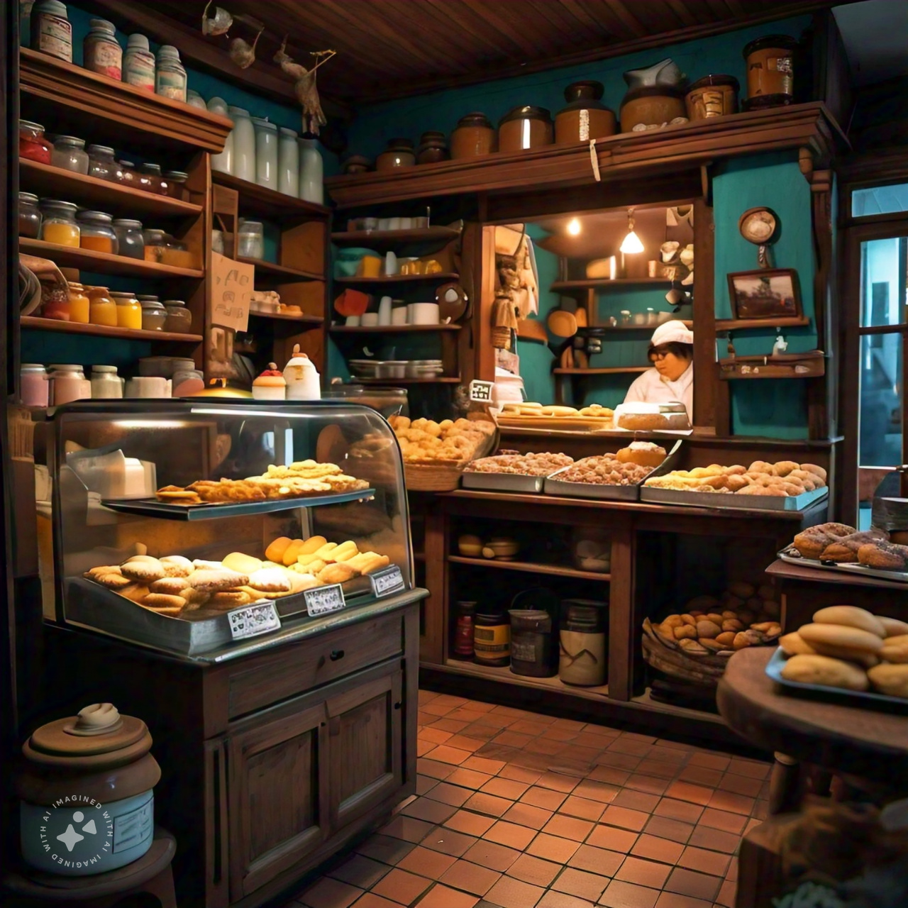
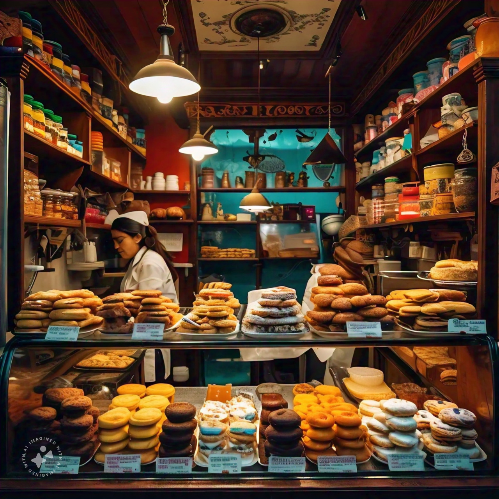

Delicioso, fresco y hecho con cariño
Delicias Techo es una pastelería dedicada a la elaboración de productos artesanales de alta calidad. Fundada en 2022, nuestra misión es endulzar la vida de nuestros clientes con creaciones que combinan ingredientes frescos y de primera calidad, técnicas tradicionales y un toque de innovación. En Delicias Techo, ofrecemos una amplia gama de productos que incluyen alfajores, tortas, cakepops, galletas y cuchuflies, todos preparados con esmero y dedicación. Nos especializamos en la personalización de pasteles para ocasiones especiales como bodas, cumpleaños, aniversarios y eventos corporativos, asegurando que cada creación sea única y memorable. Nos enorgullecemos de ofrecer un servicio al cliente excepcional, desde la atención personalizada en nuestras tiendas hasta la entrega puntual de nuestros productos. En Delicias Techo, nuestro objetivo es crear experiencias dulces y memorables, convirtiéndonos en la elección preferida de nuestros clientes para todas sus celebraciones y antojos cotidianos.
Nuestras Tiendas
Tienda La Reina
 Tienda ubicada en calle Principe de Gales, comuna de la ReinaTeléfono: +569 7894563
Tienda Macul
 Tienda ubicada en calle Rodrigo de Araya, comuna de MaculTeléfono: +569 9876543